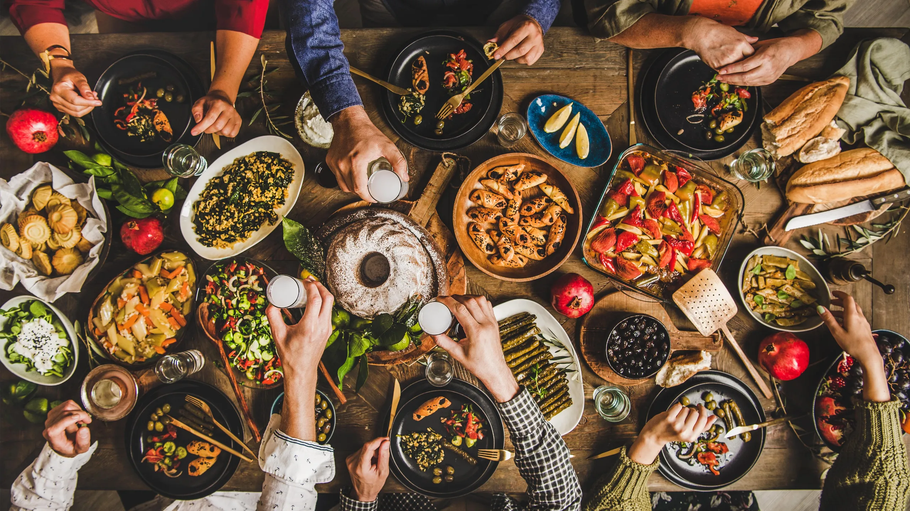
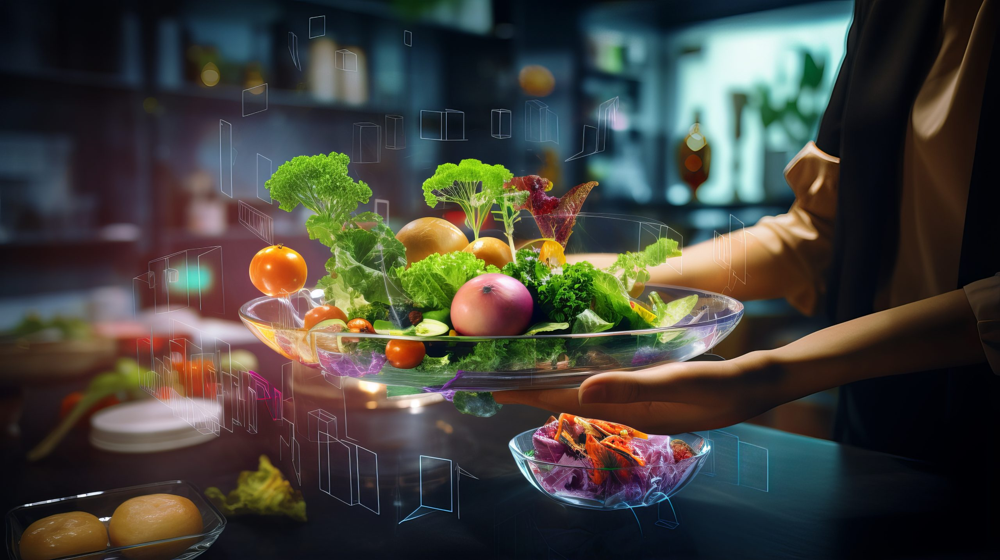

Un viaje culinario para los sentidos

Eleva tu paladar

Descubre una nueva dimensión del sabor en Next F. Nuestra cocina, una fusión de tradición y vanguardia, te llevará en un viaje culinario inolvidable. Cada bocado es una obra de arte, cuidadosamente elaborada con ingredientes frescos y de la más alta calidad. No esperes más para vivir una experiencia gastronómica única. ¡Te esperamos en Next F!
Déjate sorprender por la presentación de cada plato, una verdadera obra de arte culinaria. Nuestros chefs, apasionados por su oficio, seleccionan cuidadosamente los ingredientes más frescos y de temporada para crear combinaciones de sabores que despertarán tus sentidos. Acompaña tu comida con una copa de nuestro vino seleccionado especialmente para maridar a la perfección con cada plato. En Next F, cada visita es una experiencia inolvidable.